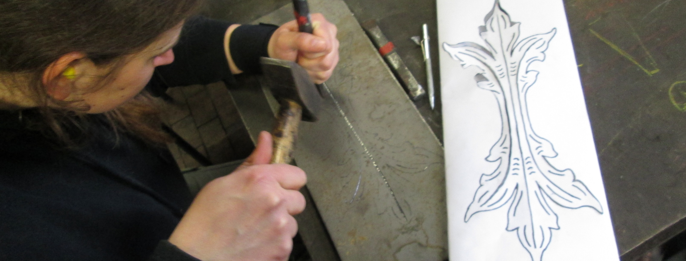
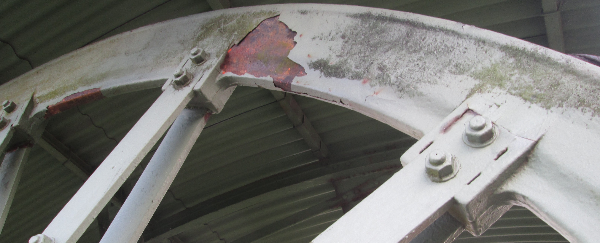

Restaurierung
„Die Restaurierung besteht in einem unmittelbaren Tätigwerden an beschädigten oder verfallenen Kulturgütern, mit dem Ziel, eine bessere Lesbarkeit herzustellen, wobei ihre ästhetische, historische und materielle Unversehrtheit soweit wie möglich zu wahren ist.“
E.C.C.O. Berufsrichtlinien: Der Beruf des Restaurators
Wir führen Metallrestaurierungen nach restauratorischen Grundsätzen wie Substanzerhalt, Reversibilität und Maßnahmentransparenz durch. Wesentlicher Bestandteil dieser Arbeit sind Bestandsaufnahme, Dokumentation und Ausarbeitung von Restaurierungskonzepten.
 Erhaltung, Konservierung und Pflege des Bestandes stehen an erster Stelle. Für ergänzende Arbeiten führen wir Rekonstruktionen und Kopien von Metallarbeiten aller Epochen durch, unter Zuhilfenahme historischer Arbeitstechniken wie z.B. Feuerschweißen und Vergolden. …